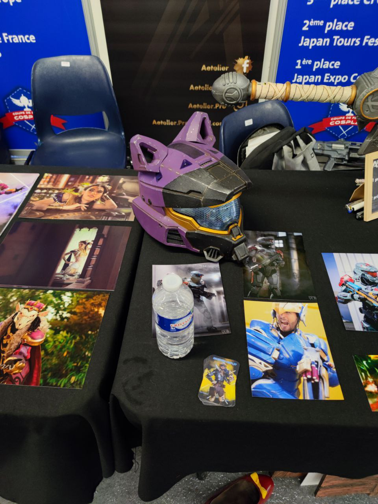
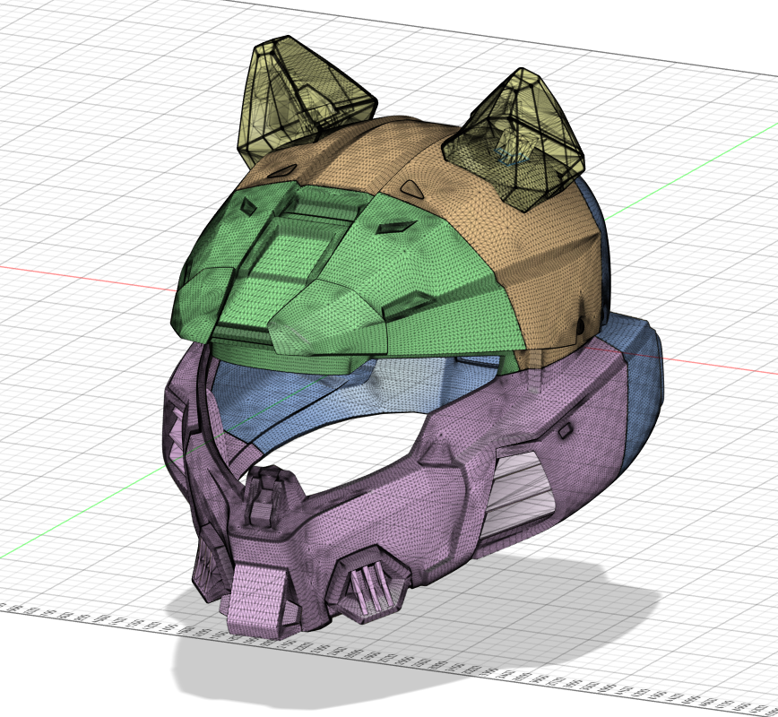
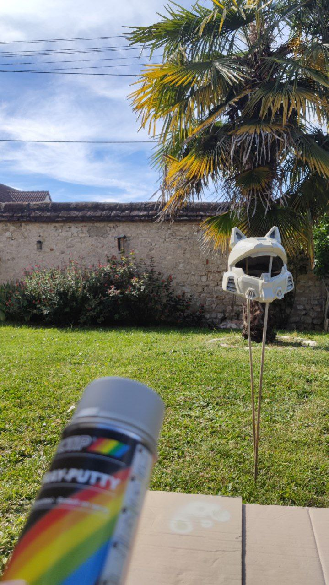
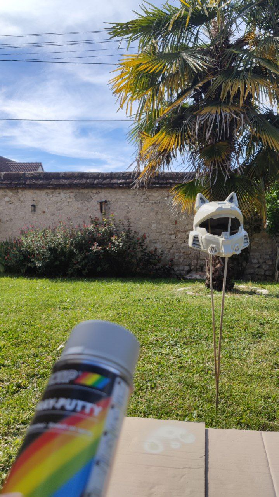
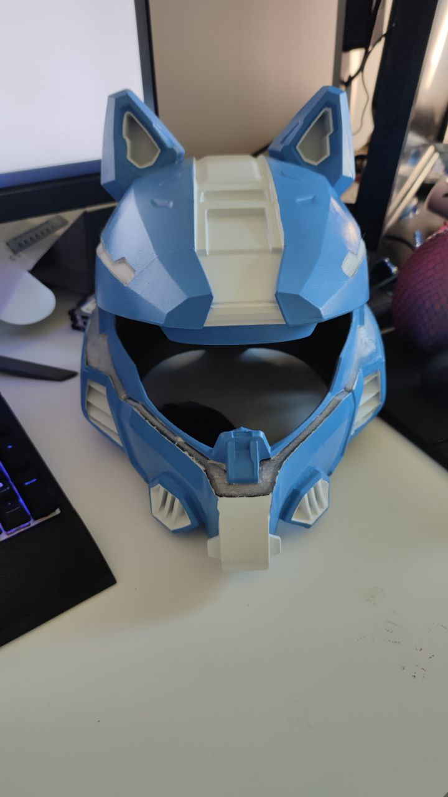

I was at Japan Tour 2024 when I came across a custom Halo helmet. I found it so cool that I decided I wanted to make one for myself. I spoke with the maker of the custom Halo helmet, but he told me he couldn’t take any commissions for another two years. So, I decided to make one myself.
First, I needed to find an STL file of the helmet so I could replicate it. After finding the file I was looking for and thinking about how to make it, I decided to cut the model into several 3D-printable pieces.
I first printed a 0.5-scale version of the helmet to run some tests and ensure everything would work correctly. I sanded all the pieces and then glued them together with super glue. To smooth out the print lines, I first tried using wood filler to cover the more significant imperfections. Then, to hide the finer print marks, I applied spray putty. Finally, I finished the helmet with a coat of spray paint to give it a polished and uniform appearance.
I learned a lot of techniques from working on the smaller version. For instance, I discovered that sanding the plastic to remove print lines is mostly ineffective, as it only works on severely damaged areas or flat layers. After completing all the prints, I assembled the pieces with super glue, similar to the small version, but to add extra rigidity to the helmet, I reinforced it with an epoxy glue from the inside. I also had the idea of adding transparent filament lines to accommodate LEDs later on (though, as you’ll see, this didn’t go as planned).
 

Now I’m stuck. What happened is that when I spray-painted the helmet, I didn’t realize that the transition between the black plastic and the transparent plastic from the print would be so noticeable. Unfortunately, I became fixated on this flaw and felt frustrated with how the helmet turned out.
*I need to find a way to motivate myself again and figure out how to hide these black lines. These transparent layers are supposed to remain visible to allow the light from the LEDs inside the helmet to shine through. So, I can't just paint them a different color since I need the transparent areas to remain clear for the LED light to pass through. I need to come up with a creative solution that hides the black lines while still allowing the light to shine through as intended.
sooooo I'm stuck, but it's still cool but unfinished
I still need to make the helmet look worn by applying silver paint for a weathered effect. After solving the issue with the black lines, I can add the LEDs to complete the look and make sure the transparent areas allow the light to shine through. I need to shape the visor properly and ensure it fits perfectly with the helmet design.